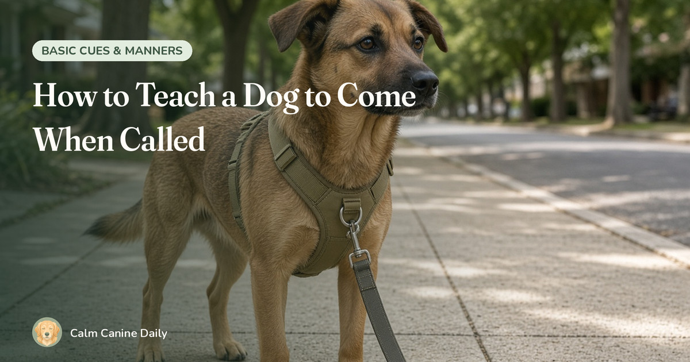

How to Teach a Dog to Come When Called (Even If They’ve Been Ignoring You)

The short answer. To teach a dog to come when called, start in the hallway. Say their name, then “come,” and pay with something excellent the second they arrive. Often release them to go play again. Move to a fenced yard, then a long line. If they ignore you, go get them calmly. Never punish a late recall, and do not go off-leash near a road until the skill is reliable.
Recall is a safety skill you rebuild with better pay and a long line — not a lecture in an unfenced park. This page is the core come-when-called plan. It is not a second loose-leash lesson; for that, see why your dog pulls on the leash. A look-at-me cue helps them notice you before you call.
This is a researched how-to based on established positive-training methods, including published American Kennel Club recall advice cited below. It is not a hands-on trial of this plan on a panel of dogs, and it is not a reason to drop the leash near a street.
Educational content only. Some links on this page are affiliate links. If you purchase through one, we may earn a commission at no extra cost to you. We do not impersonate or speak for any course creator.
About this article. Educational tips from Calm Canine Daily for everyday US owners. This is not veterinary advice, a diagnosis, or a promised result. We are not a certified training practice and we do not claim CPDT or DVM credentials. If you are worried about a bite risk or a situation you cannot manage safely, pause and get qualified in-person help.
Who this plan is for: owners who can practice in a hallway or fenced yard, and who will use a long line outdoors until the skill is real. Who this is not for: off-leash tests near traffic, an unfenced open area, or a dog who becomes unsafe around other dogs or people. Get in-person help for that, and follow local leash laws.
Key takeaways
- Start easy, pay big, and often let them go play again so “come” does not only mean the fun is over.
- A long line in a fenced yard is the outdoor classroom. An unfenced park is not.
- If they ignore you, walk them in calmly. Do not chant the cue, and do not punish the arrival.
- Off-leash near a road waits until the skill is reliable. An online course does not change that.
In this article
- Why “come” falls apart outdoors
- What not to do
- How to teach a dog to come when called indoors
- The fenced-yard step, then a long line
- What to do when they ignore you
- When — and when not — to go off-leash
- When to get extra help
- FAQ
Why “come” falls apart outdoors
Indoors, you are often the most interesting thing in the room. Outdoors, you compete with squirrels, smells, other dogs, and the joy of running. If “come” has mostly meant “the walk is over” or “you’re in trouble,” your dog has a reason to hesitate.
The fix is not a louder voice. It is a better history: coming to you pays extremely well, it is practiced in easy places first, and it does not get punished when they finally show up.
What not to do
Don’t punish a late arrival. The American Kennel Club’s recall advice is clear on this point: never punish your dog for coming to you, even if they took their time. A scold at the end of a recall teaches them that coming in was a bad idea.
Don’t call once and then give up, or repeat the cue into the air. If they do not come, the environment is too hard or the cue is not finished. Go get them, or shorten the distance, and try an easier rep.
Don’t test off-leash too soon. An open park, a trailhead, or the strip of grass by a parking lot is not a first classroom. Use a fenced yard and a long line until the skill is reliable.
Don’t only call them to end the fun. Call, pay, and often release them back to play, so the word does not only predict the end of the outing.
How to teach a dog to come when called indoors
- Start in a hallway or a quiet room, a few steps away.
- Say their name, then “come,” in a happy voice. You can pat your legs or take a step backward so moving toward you is easy.
- The second they arrive, mark it (“yes”) and pay with something excellent — a special treat, not the dull everyday kibble if you can help it.
- Often release them to go back to what they were doing: “free,” then let them wander again.
- Repeat in different rooms, then from a little farther away, still indoors.
Keep sessions short and successful. If you need to hook a finger in the collar when they arrive, pay for that too, so a collar touch is not the end of the party.
The fenced-yard step, then a long line
When indoor recalls are easy, move to a fenced yard. Start close. Call, pay big, and release them to sniff again. Then add a little distance.
Outdoors beyond a fence, use a long line. Clip it on, let them wander, and call them in before they hit the end of the line if you can. The line is a safety tool, not a fishing rod. Do not yank them in as the main training method; if they do not come, walk them in calmly and make the next rep easier.
Practice in new places only after the yard is going well, still on the long line, still with excellent pay.
What to do when they ignore you
Do not stand there repeating “come.” Walk toward them calmly, pick up the long line, and get them in without a lecture. Then reset: shorter distance, better treat, easier moment.
If they start to come and then veer off, you called too late or from too far. Call earlier, when they are already a little oriented toward you. A look-at-me can help you get that first glance before the recall.
If they bolted through an open door, that is a door-darting problem as well as a recall problem. Manage the exit, then come back to this plan.
When — and when not — to go off-leash
US leash laws and local park rules come first. Even where off-leash is allowed, do not drop the leash near a road, a parking lot, or a crowded trail until recall is boringly reliable in easier places — and even then, there is no such thing as a guaranteed recall around a squirrel.
Dog parks and busy open fields are advanced, optional environments, not a training shortcut. If you are not sure, keep the long line on. An online course is not a reason to drop it.
When to get extra help
Get a veterinarian involved if your dog’s response to being called changed suddenly, or if you suspect pain or hearing trouble.
Get a qualified trainer or behavior professional involved (CPDT-KA or CBCC-KA are one useful filter) if your dog bolts toward other dogs or people in a way you cannot safely manage, or if you cannot find an easy place to practice. An article is not enough in those cases, and neither is an online course.
FAQ
How do I teach my dog to come when called?
Start indoors. Say their name, then “come,” and pay with something excellent when they arrive. Often release them to play again. Move to a fenced yard, then practice on a long line. Never punish a late recall, and do not go off-leash near a road until the skill is reliable.
What should I do if my dog ignores the come command?
Do not repeat the cue into the air. Go get them calmly, or use the long line to guide them in, then make the next rep easier — shorter distance, better food, fewer distractions. If they cannot succeed, the environment is too hard, not “them being stubborn.”
Should I punish my dog for not coming when called?
No. And do not punish them when they finally arrive, either. The American Kennel Club advises praising a recall even if it was slow. A scold at the end of “come” makes coming in a risk.
When can I let my dog off the leash at the park?
Only when recall is reliable in easier places, local rules allow it, and you are far from roads and other serious hazards. A busy dog park is an advanced environment. If you are not sure, keep a long line on.
What treats work best for recall training?
Use something your dog finds excellent and does not get all day — often a special meat, cheese, or a favorite toy, depending on the dog. Save the high-value stuff for this cue, especially outdoors. Whatever you pick, pay the second they arrive.
Related guides
- Teach Your Dog to Look at You
- Why Your Dog Pulls on the Leash
- How to Stop Your Dog From Darting Out the Door
- Brain Training for Dogs review
- Brain Training for Dogs vs SpiritDog vs Zak George
- More cues and manners guides
- More leash and walks guides
- Get the free 7-Day Calm Dog Checklist
Sources
- Reliable Recall: Teaching Your Dog to Always Come When Called (American Kennel Club). Cited for the advice to never punish a dog for coming to you, to avoid repeating the cue when the environment is too hard, and to call the dog during play and then release them back to the fun.
- Vendor facts about Brain Training for Dogs (attention and bonding games including the Airplane Game and hide-and-seek as described on the sales page, advertised $67 price, and 60-day guarantee) are from the official pages as checked on November 21, 2026: braintraining4dogs.com/get-btfd and braintraining4dogs.com. Confirm current terms at checkout.